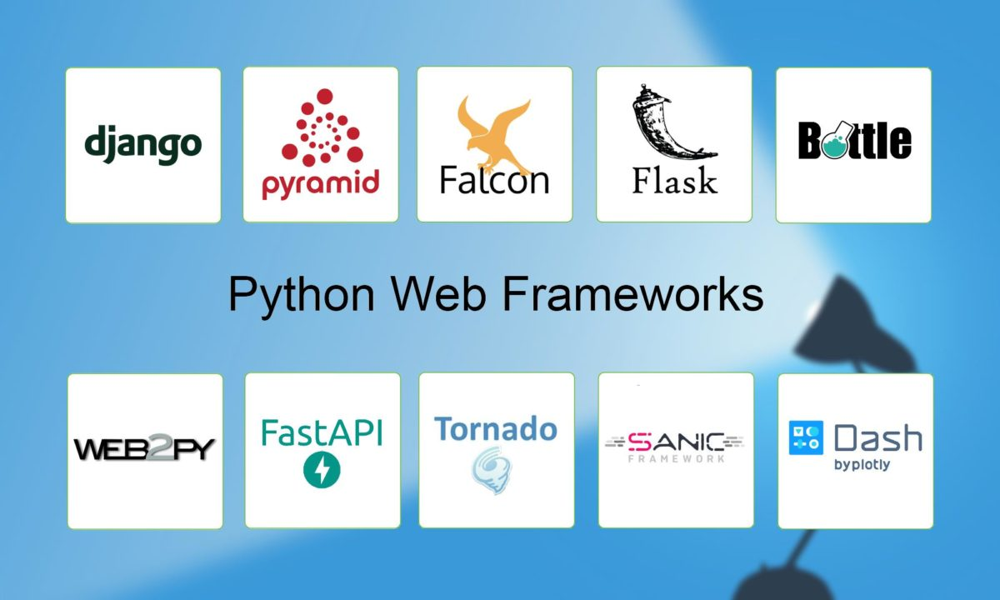
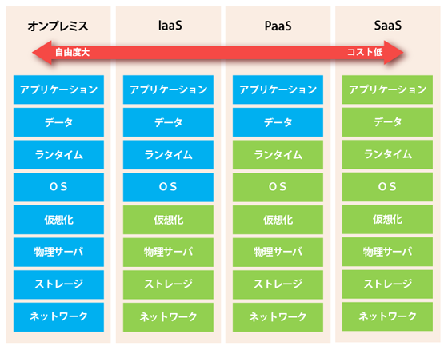

Python で Line Bot をつくる
ライブコーディング
2021/04/21
 LINE
今
たかし
たかぴろ！久しぶり！！
LINE
今
たかし
たかぴろ！久しぶり！！
操作方法
-
?ヘルプ -
escスライド全体像表示
Line Bot
1. 楽天レシピAPI
2. Python 3. Flask
4. Heroku にデプロイ
Heroku は PaaS
では…
開発開始！
ありがとうございました！！
- 30 分で全部作るのは演出です
- 面白いなって思ってくれたら嬉しいです！
この資料は reveal.js で作りました

- HTML/CSS/JS のプレゼン作れるフレームワーク
- サードパーティーのモジュールが充実してました
- 一部 Markdown でも書きました、簡単でした
- 凝ったプレゼンを作りたいときには良いかも